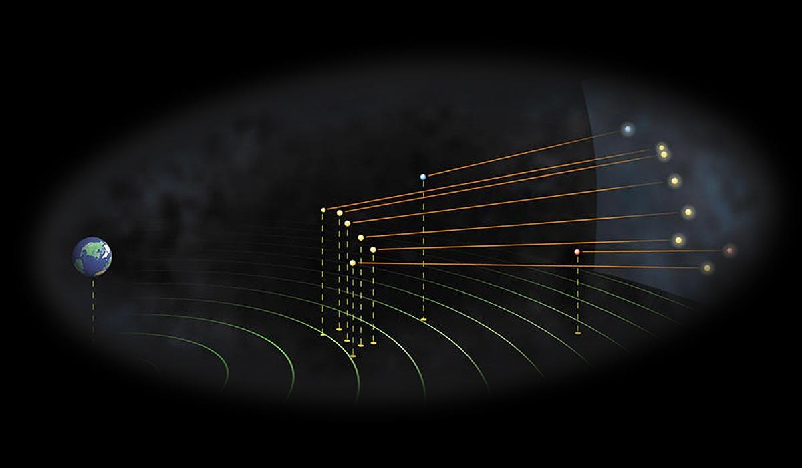
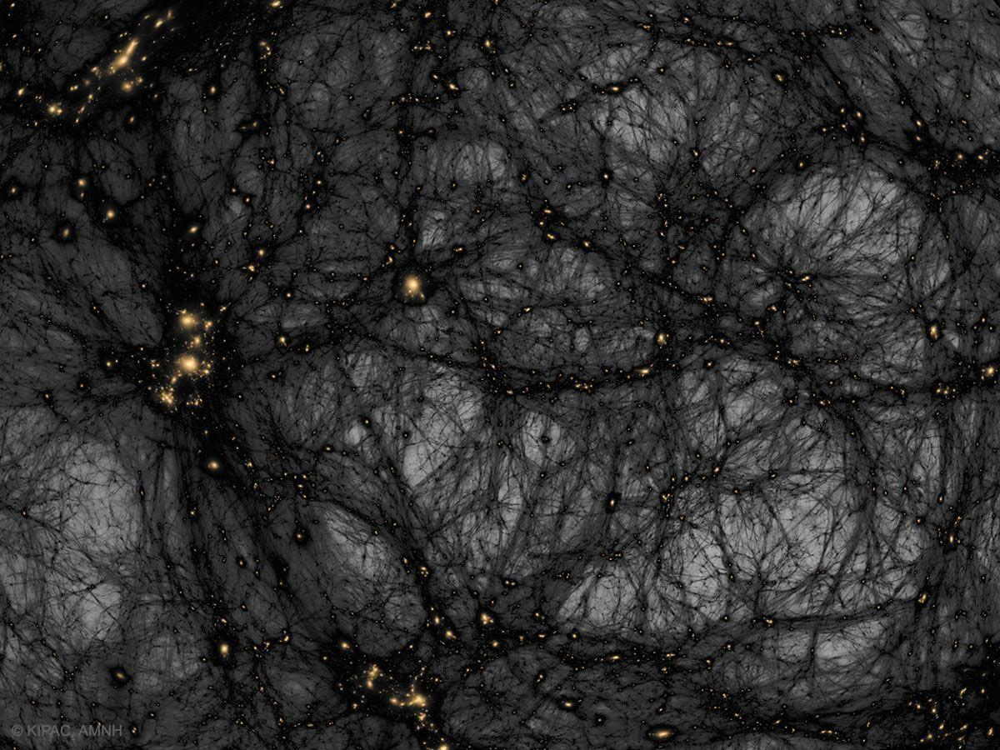

Astronomy is the study of everything in the universe beyond Earth’s atmosphere. That includes objects we can see with our naked eyes, like the Sun, the Moon, the planets, and the stars . It also includes objects we can only see with telescopes or other instruments, like faraway galaxies and tiny particles. And it even includes questions about things we can't see at all, like dark matter and dark energy .
Early observers looking at the night sky noticed patterns in the stars . These patterns, which we call constellations, might appear to change place, but they don’t change shape. People around the world gave them names (like Orion the hunter or Leo the lion) and told stories about them. You may know some of these stories as myths, or as astrology. Astrology can be fun to think about, but it’s different from astronomy. Astrology is not science!
Early observers also noticed some bright objects in the sky that seem to wander around among the stars. The ancient Greek philosophers called these objects “planets,” which is Greek for “wanderers.” The planets are our near neighbors, and they do move. They orbit the Sun , just as Earth does.
To the naked eye, the stars look like tiny points of light . But stars are not tiny—they're huge, burning balls of gas, like our Sun. They just appear small because they are so far away. The nearest star to our solar system is 4 light years away, which is 20 trillion miles.
The stars may all look the same distance away, as if they were pasted on the wall of a giant dome. But that's an illusion too. Some stars are tens of thousands of light years farther away from Earth than others. You can see this illusion for yourself by building your own Big Dipper.

The stars of the Big Dipper may all look the same distance away, as if they were pasted on the wall of a giant dome.
But if you look at the same stars from a different place in the universe, you'll see that some stars are billions of miles farther away than others!
How can we tell how far away a star is? One clue is its brightness. Distant stars look dimmer than they would if we were close to them. But that clue isn’t very reliable, because stars vary a lot in their brightness. Some stars that stand out in the sky aren’t actually very far away compared to other stars—they’re just incredibly big and bright. And some nearby stars are dim. In fact, our Sun’s closest star neighbor, Proximus Centuri, is so faint and tiny that we need a telescope to see it!
So astronomers rely on measurements of something called parallax to figure out the distances of stars. They look at a nearby star from two different places and compare its position relative to other, much more distant stars.
You might feel like you’re sitting still, but you’re actually flying through space incredibly fast! That’s because Earth is carrying you like a spaceship.
Earth is spinning. If you were standing on the equator, you and the spot under your feet would be rotating at a speed of about a thousand miles per hour. But Earth is also orbiting around the Sun, moving even faster: 67,000 miles per hour. And the Sun itself is moving around the center of our galaxy, carrying everything in the solar system with it, at a rate of 490,000 miles per hour. And that’s not all. Our galaxy, the Milky Way , is moving too—at a rate of 872,405 miles per hour. Our cluster of galaxies is moving too. And so is everything else in the universe.
If Earth is moving so fast, why don’t we fly off? Thank gravity for that. Gravity is the force of attraction between all objects in the universe. An object’s gravity depends on its mass —its total amount of matter , or “stuff.” The more massive the object, the stronger the gravitational force. And the closer two objects are, the stronger the gravitational pull between them. Gravity is what keeps your feet on the ground—and what keeps Earth and the planets orbiting around the Sun instead of floating away.
When you jump, you always fall back to Earth. What goes up must come down, right? Not quite! Something can go up and not come down if it reaches the escape velocity, the speed at which it breaks free from a planet’s gravitational pull. That’s how rockets work. Their engines are designed to push the rocket up so hard that it moves fast enough to get away. The universe is full of “runaway” stars and planets that escaped the gravity of their neighbors.
Light is a form of energy called electromagnetic radiation. We see objects because they reflect, or bounce, light into our eyes. But there’s a whole spectrum of electromagnetic radiation, and our eyes can detect only a teeny, tiny portion of it. That portion—visible light—consists of different wavelengths of light that we perceive as different colors. If you think of the electromagnetic spectrum as a piano keyboard, visible light is the equivalent of a single octave. Objects in space are emitting or reflecting radiation from all across the spectrum, including ultraviolet (UV), infrared, microwaves, and radio waves. To see this invisible electromagnetic radiation, we need to use special tools like microwave telescopes and gamma-ray telescopes.
So far we’ve talked about things we can detect with our eyes and our tools, like galaxies, stars, and planets. These objects (and even trees, puppies, and ourselves) are all called matter. But did you know that there are things in the universe that we can’t detect, no matter what instruments we use? They’re called dark matter and dark energy.
Dark matter doesn't give off light like a galaxy or absorb light like a black hole. Scientists know it exists because it has a gravitational pull, just like normal matter.
Dark energy is a mysterious pressure working in opposition to gravity, pushing matter apart.
Scientists still don’t know very much about dark matter and dark energy, but they are hard at work trying to find out more. Maybe one of those scientists will be you!
This is a computer rendering of dark matter. The light areas represent dark matter.
When you think of an astronomer, maybe you’re imagining someone using a telescope to collect data about objects in the sky. Some astronomers do that—they’re called observational astronomers. But there are lots of other kinds of astronomers too! Do you like to build things? Make things work? Write computer programs? Solve equations? There are astronomers who do all different things like these.